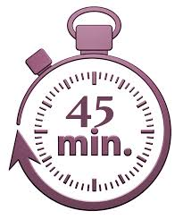

What does Mr. Bean do everyday?
Something to begin!

Activity Time
What does Mr. Bean do everyday?
He weaks up every day... He reads the news paper.
Have you thought how many things you do everyday? Have you realized that most of the time you do them, even without thinking.
Routines are all those activities we repeat in a random way to archive our goals and organize our life.
Let's take a moment and think about the benefits of a routine life.
A routine is the usual or fixed series of things that you do at a particular time (daily , weekly, monthly an so on).
People become more productive when they wake up and follow a routine. It gives them the oportunity to be organized for the rest of the day.